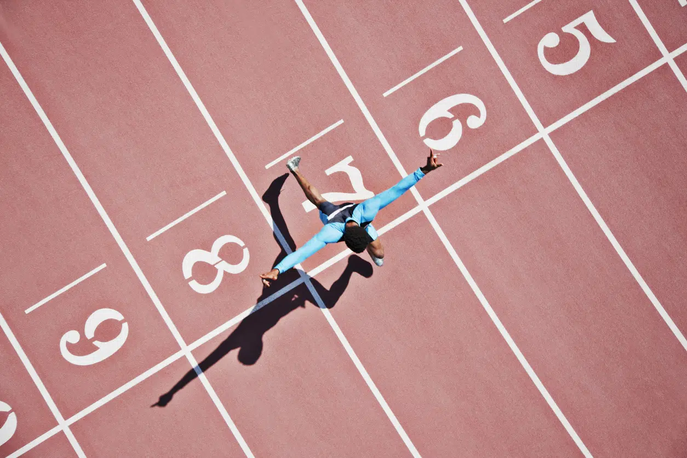

Mi pasión. Atletismo

24 de noviembre de 2026
Se lo debo todo a un profesor del colegio que siemore me insistió para que hiciese atletismo y por supuesto también estoy agradecido a mis padres, entrenadores, fisios y médicos.
Han sido años maravillos, en los que he crecido como deportista y como persona. Siempre recuerdas lo bueno aunque en ocasiones también hay momentos muy dificiles cuando te lesionas o no llegas al objetivo.
En ocasiones es dificil valorar el exito pero ahora, mirando atrás me siento un afortunado por lo que he logrado.